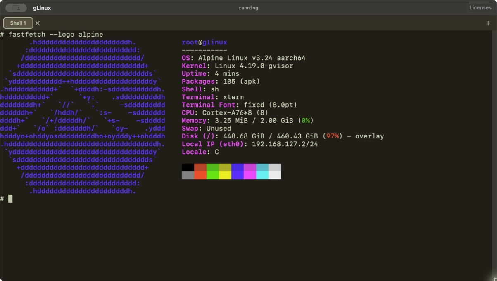

Ready when you are
Open the app and start using the included Alpine Linux command line. No Linux image download or setup step.
Start with Alpine. Build more with local Linux sandboxes.
Free Alpine terminal · Pro for development and MCP workflows
Coming to Mac App Store
apk add fastfetch.Open the app and start using the included Alpine Linux command line. No Linux image download or setup step.
Run an aarch64 Linux command line on an Apple Silicon Mac with macOS 14 or later.
Your shell files live in the app's local container. Commands can make outbound network connections when you choose.
GLINUX PRO
Keep Linux environments separate while working with files and services on your Mac. Pro adds the tools for a repeatable local workflow.
Create multiple sandboxes with Alpine, Debian, Fedora, Ubuntu or a compatible public Arm64 image. Allocate multiple CPU cores to each sandbox.
Share selected Mac folders at guest paths you choose. New mounts default to read-only. Map local ports to test services running in a sandbox.
Connect an MCP client to create and use separate agent sandboxes. Give each task its own Linux environment instead of running its commands directly on your Mac.
Additional images download when you create a sandbox. Images must support linux/arm64 and include /bin/sh. Compatibility varies by software; Docker and Linux desktops are not included.
PLANS
$0
The included Alpine sandbox, one CPU core and a ready-to-use terminal. Files stay on this Mac.
Explore the basics ↗$4.99 / month
Multiple sandboxes, public Arm64 images, multiple CPU cores, shared folders, port mappings and MCP.
Subscription details ↗FOR ONGOING WORK
$34.99 / year
All Pro features. Eligible new subscribers pay $19.99 for the first year, then $34.99 per year.
Offer and renewal details ↗US storefront launch prices. Other regions use local prices. Subscriptions renew automatically unless canceled; the app and Apple purchase confirmation show your price and offer eligibility. The Mac App Store release is in preparation; purchases are not yet available.
Planned availability excludes mainland China. Hong Kong, Macau and Taiwan are included.
Alpine Linux, ready on your Mac.
Apple Silicon · macOS 14 or later